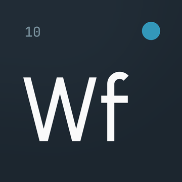

Velocidade e upload
Download e envio reais, não a velocidade contratada.
Ande pela casa com o iPhone. O Wf desenha a planta com o LiDAR, mede a internet em cada ponto e mostra onde falta um nó da mesh.
Grátis. O beta abre assim que a Apple concluir a revisão. Android em breve.
Não precisa de planta, régua nem equipamento. Só do iPhone e das luzes acesas.
O LiDAR lê paredes, portas, janelas e móveis e monta a planta enquanto você anda. Subiu a escada, o app troca de andar sozinho.
Velocidade, upload, latência, perda de pacotes e jitter, tudo preso ao ponto exato da casa em que foi medido.
O mapa mostra as zonas fracas e indica o melhor lugar para um nó extra: o último ponto com sinal bom perto delas.
Download e envio reais, não a velocidade contratada.
Tempo de resposta até o roteador e até a internet, e o quanto ele oscila.
O que trava chamada de vídeo e jogo, mesmo com velocidade alta.
Em qual nó você estava em cada ponto e onde o iPhone trocou de um para outro.
O barômetro separa os andares sozinho. Cada um ganha planta, mapa e recomendação próprios.
Avisa quando o iPhone muda de wi-fi ou de operadora e guarda isso em cada ponto.
Planta em 2D e 3D com a área de cada andar. Dá para somar cômodos ao mesmo mapa.
Marca onde há muito metal ou motor por perto, o que costuma explicar sinal fraco.
Os mapas ficam no aparelho e saem como imagem para mandar ao técnico ou ao provedor.
O Wf não tem cadastro, conta nem servidor próprio. Os mapas ficam guardados só no aparelho, e só saem quando você toca em compartilhar. Para medir a velocidade, o app baixa e envia arquivos de teste de um serviço público de medição; nada da planta vai junto.
Para ler as paredes e montar a planta. Nenhuma foto ou vídeo é gravado.
O iOS só informa o nome da rede wi-fi a apps com essa permissão. O app não registra onde você está.
O barômetro mede a altura para separar os andares.
Para medir o tempo de resposta até o seu roteador.
Nos modelos Pro e Pro Max a partir do iPhone 12 Pro, que têm o sensor LiDAR, com iOS 17 ou mais novo. Os outros modelos não conseguem montar a planta.
A Apple não deixa nenhum app ler a força do sinal do wi-fi. O Wf mede o que você sente de verdade: velocidade, resposta e estabilidade em cada ponto.
Sim. O app não conversa com o roteador: ele mede a rede do lado do iPhone, então serve para qualquer marca e qualquer provedor.
Cada medição baixa alguns megabytes. Um mapa completo de uma casa pode passar de 500 MB, sempre pelo wi-fi, nunca pelo plano de dados.

Beta aberto em breveInstale antes o app TestFlight, da Apple, e abra o link no iPhone.